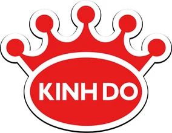
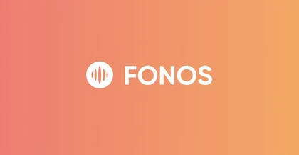

NGHE MẪU · TIẾNG VIỆT
Ngô Tấn Phát · Diễn viên lồng tiếng
Câu chuyện của bạn.
Giọng nói của tôi.
Giọng nam trầm ấm. Quảng cáo, nhân vật và lồng tiếng Việt.
Quảng cáo·Nhân vật·Lồng tiếng

Ngô Tấn PhátGiọng nói Việt. Kết nối cảm xúc.
Làm việc tại TP. Hồ Chí Minh, Việt NamXem sản phẩm tiêu biểu ↓
Giọng đọc trong các chiến dịch của




Sản phẩm tiêu biểu
Giọng nói trong
từng câu chuyện.
Không tải được video. Hãy tải lại trang hoặc mở trực tiếp file video.
Nổi bật / Quảng cáo
Traveloka
Giọng đọc tiếng Việt trong quảng cáo truyền hình của Traveloka.
- VAI TRÒ
- Diễn viên giọng nói
- ĐƠN VỊ THU ÂM
- Dat Phi Media
- NGÔN NGỮ
- Tiếng Việt
- LOẠI HÌNH
- Quảng cáo truyền hình
TRÊN MÀN ẢNH
Những vai diễn mang dấu ấn.
Quý Hợi - Phi vụ nghìn cân (2024)
Dorry - One Piece – Mùa 2 (2026)
Mane - Tuyển thủ dê: Mùi vị chiến thắng (2026)
Lee Do - Cò Súng (2025)
Yeon - Lời nguyền Đông cung (2026)
Đinh Lễ - Bình Ngô đại chiến (2020)
Xem thêm 6 vai diễn
Seok Hyeon - Chó săn công lý – Mùa 2 (2026)
Noh Jin Pyo / Jang Kang - Tội ác kẻ làm ngơ (2025)
Sebastian - Đội thám tử cừu: Án mạng lúc nửa đêm (2026)
Park Kyeong Nam / Yeong II - Bạn trai theo yêu cầu (2026)
Soo-hyun - Thần đèn ơi, ước đi (2025)
Richard Hagan - Đặc vụ đêm – Mùa 3 (2026)
Các vai diễn khác
- Jackson Storm - Vương quốc xe hơi 3 (2017)
- Mojo Jojo - The Powerpuff Girls (1998)
- Kevin Levin - Ben 10: Ultimate Alien (2010)
- Mike - Đấu trường âm nhạc (2016)
- Johnny Bravo - Johnny Bravo (1997)
- Spyro - Học viện Skylanders – Mùa 2–3 (2017–2018)
- Spike - The Tom and Jerry Show (2014)
- Petey - Dog Man (2025)
- Cattrick Lynxley - Phi vụ động trời 2 (2025)
- Jung Min - Báo ứng (2025)
- Hong Jae Hun - Trung tâm chăm sóc chấn thương (2025)
- Mộc Thạnh - Tử chiến thành Đa Bang (2018)
- Ông Hòe - Trạng Quỳnh nhí: Truyền thuyết Kim Ngưu (2025)
Dịch vụ thuê giọng
Đúng giọng.
Đúng nhân vật.
Giọng đọc quảng cáo.
Giọng nam trẻ đến trung niên, dày và trầm ấm. Linh hoạt từ tin cậy, chuyên nghiệp đến giàu năng lượng.
Diễn xuất nhân vật.
Nam chính cương trực, nghĩa hiệp hoặc phản diện cần xử lý kỹ thuật và chiều sâu tâm lý.
Lồng tiếng phim & game.
Phim truyền hình, điện ảnh và game. Thu tại nhà hoặc studio theo yêu cầu.
Về Ngô Tấn Phát
Một hành trình.
Nhiều tiếng nói.
Từ diễn xuất đến chỉ đạo lồng tiếng và đào tạo giọng nói — một hành trình gắn bó với câu chuyện, nhân vật và cảm xúc.
Chọn một năm để khám phá hành trình.
Hồ sơ trên Wiki Lồng Tiếng ↗- Tôi bắt đầu học lồng tiếng từ giữa năm 2006, sau đó được đào tạo dưới sự hướng dẫn của đạo diễn Xuân Tâm. Đây là nền tảng đầu tiên cho hành trình diễn xuất bằng giọng nói của tôi.
- Tôi gia nhập Đạt Phi Media và bắt đầu sự nghiệp lồng tiếng chuyên nghiệp, đưa những kiến thức đã học vào phòng thu và từng vai diễn.
- Tôi tiếp tục tham gia một số dự án của Đạt Phi Media trong giai đoạn 2018–2024, duy trì sự gắn bó với công việc lồng tiếng và diễn xuất bằng giọng nói.
- Cuối năm 2024, tôi tiếp tục công việc lồng tiếng, mang kinh nghiệm tích lũy qua nhiều năm vào những câu chuyện và nhân vật mới.
- Từ tháng 6/2025, tôi đảm nhiệm vai trò đạo diễn lồng tiếng tại Đạt Phi Media. Từ tháng 9/2025, tôi là giảng viên giọng nói tại Đạt Phi Academy — đồng hành cùng diễn viên trong phòng thu và học viên trên hành trình phát triển giọng nói.
- Hành trình chuyên môn của tôi tiếp tục với ba hướng gắn kết: diễn xuất lồng tiếng, chỉ đạo lồng tiếng và đào tạo giọng nói. Mỗi vai trò là một cách để kể câu chuyện bằng giọng nói và kết nối với người nghe.
Quy trình hợp tác
Từ yêu cầu của bạn
đến bản thu hoàn chỉnh.
Chia sẻ yêu cầu.
Gửi thông tin về kịch bản, người nghe, mục đích sử dụng và thời hạn. Bạn cũng có thể gửi mẫu tham khảo về phong cách mong muốn.
Thống nhất công việc.
Hai bên trao đổi về cách thể hiện, yêu cầu thu âm, phạm vi công việc và chi phí trước buổi thu.
Thu âm và hoàn thiện.
Thu âm, tiếp nhận phản hồi và bàn giao theo định dạng cùng phạm vi chỉnh sửa đã thống nhất.
THÔNG TIN THU ÂM
Trước khi bắt đầu.
Bàn giao TVC trong 48 giờ.
Bản thu TVC được bàn giao trong 48 giờ sau khi chốt nội dung và phạm vi công việc. Dự án dài hoặc cần phối hợp studio sẽ được thống nhất thời gian bàn giao riêng.
Hai lần sửa miễn phí.
Tối đa hai lần chỉnh sửa miễn phí. Từ lần thứ ba, phí được tính theo tỷ lệ số chữ chỉnh sửa trên tổng số chữ của dự án.
Thay đổi trên 50%.
Sau hai lần sửa miễn phí, nếu phần chỉnh sửa vượt 50% tổng số chữ, yêu cầu được tính như một công việc mới. Chi phí cụ thể được trao đổi trước khi thực hiện.
STUDIO & PRODUCTION
Các đơn vị từng cộng tác.


